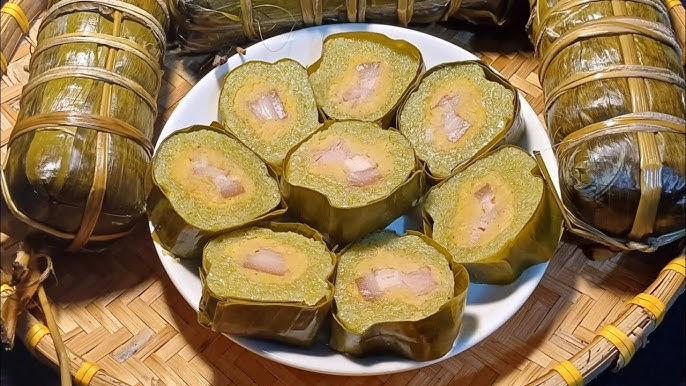
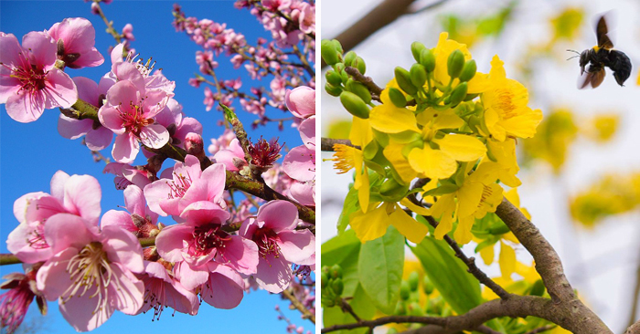
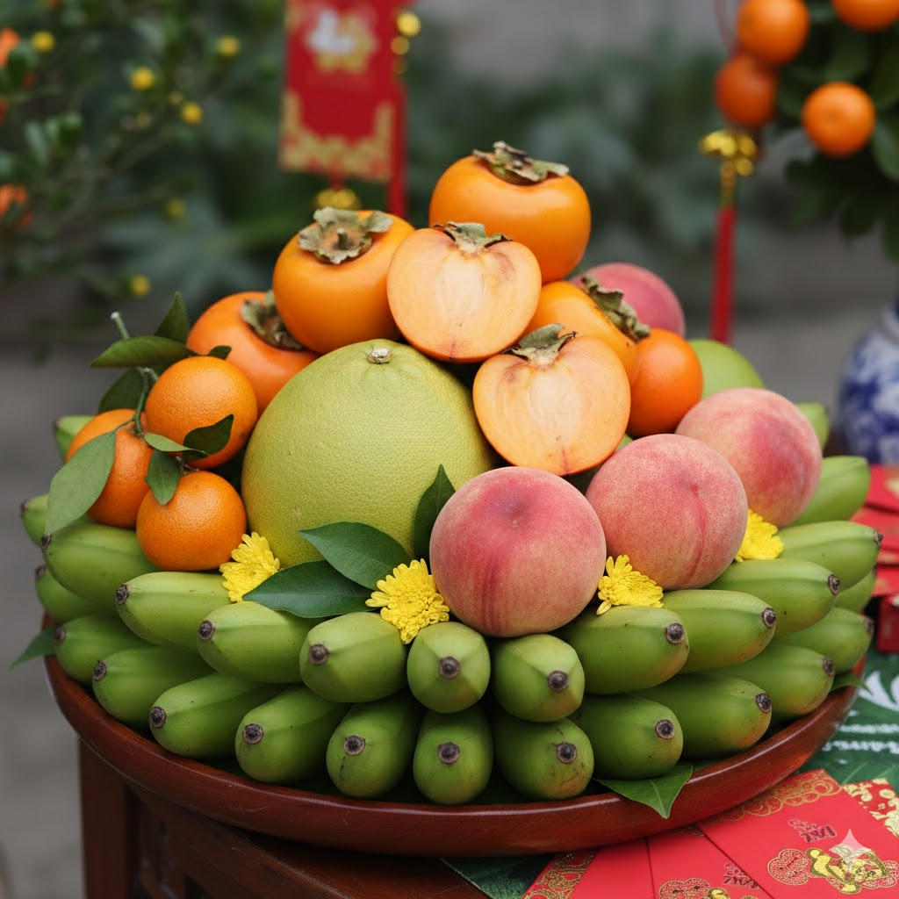
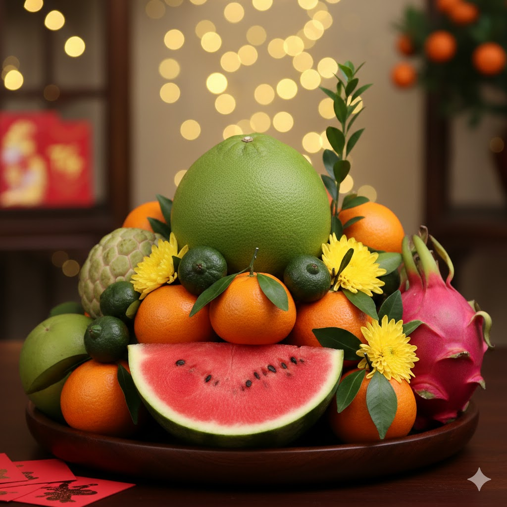
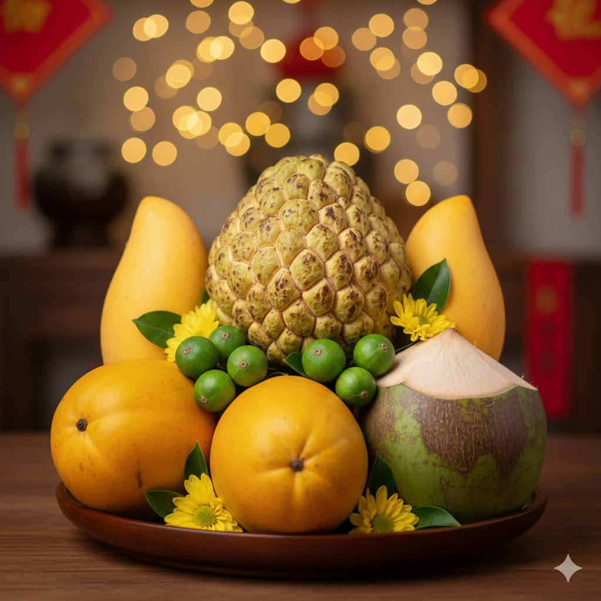
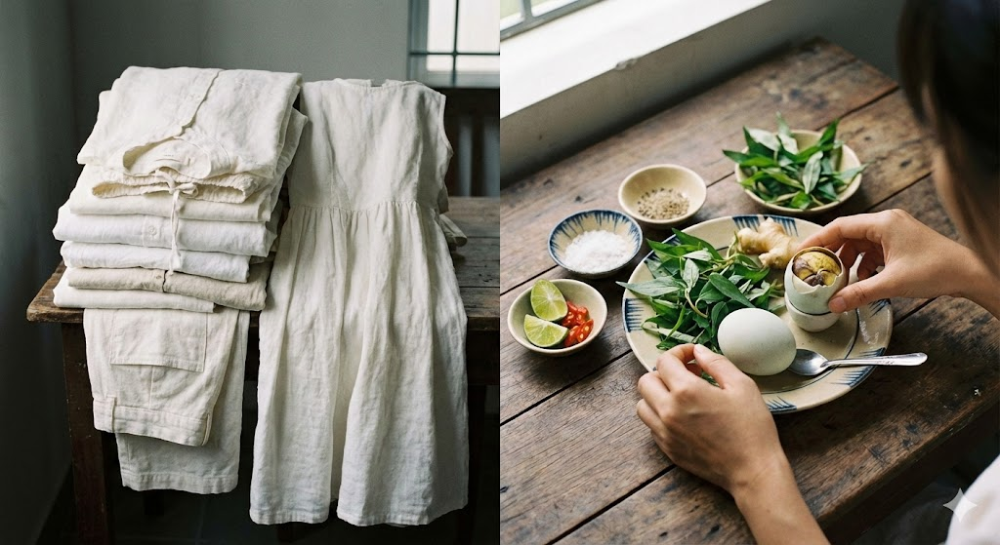
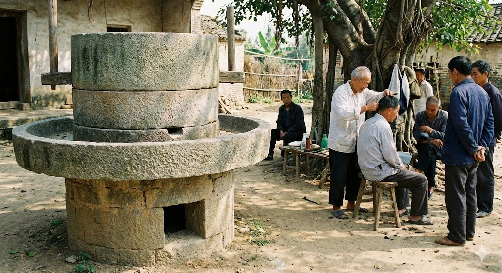
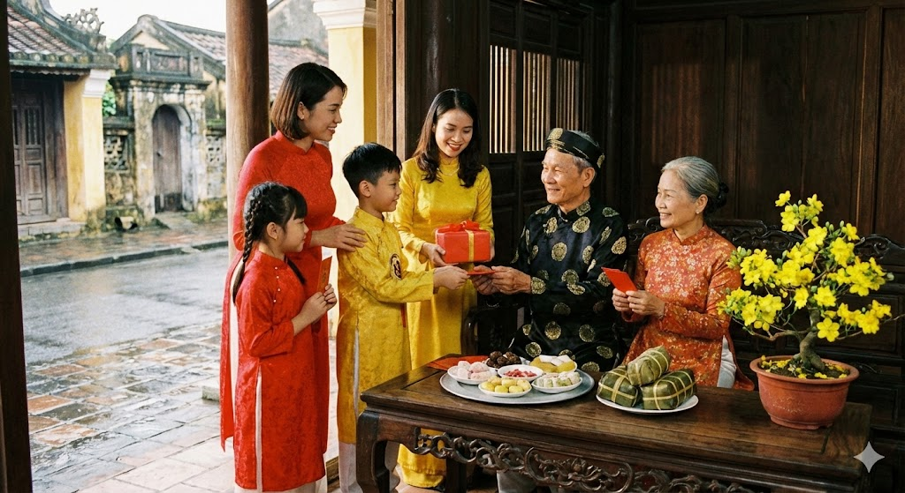

<!DOCTYPE html>
<html lang="vi">
<head>
    <meta charset="UTF-8">
    <meta name="viewport" content="width=device-width, initial-scale=1.0">
    <title>Chúc Mừng Năm Mới Bính Ngọ 2026</title>
    <link href="https://fonts.googleapis.com/css2?family=Dancing+Script:wght@700&family=Montserrat:wght@400;700&family=Oswald:wght@500&display=swap" rel="stylesheet">
    <style>
        :root {
            --red-tet: #c62828;
            --gold-tet: #ffea00;
            --dark-red: #8e0000;
            --orange-fire: #ff6f00; /* Màu nhấn cho năm Bính Ngọ */
        }

        body {
            margin: 0;
            padding: 0;
            background: radial-gradient(circle, var(--red-tet) 0%, var(--dark-red) 100%);
            font-family: 'Montserrat', sans-serif;
            color: var(--gold-tet);
            overflow-x: hidden;
            min-height: 100vh;
        }

.highlight {
    color: #d84315; /* Màu cam đậm */
    font-weight: bold;
    font-style: italic;
}
   .intro {
            max-width: 1000px;       
            margin: auto;
            font-size: 28px;
            line-height: 1.8;       
            text-align: justify;
            margin-bottom: 35px;
        }

        /* Pháo hoa li ti */
        .firework-bg {
            position: fixed;
            top: 0; left: 0; width: 100%; height: 100%;
            pointer-events: none;
            background-image: radial-gradient(circle, #fff 1px, transparent 1px);
            background-size: 80px 80px;
            opacity: 0.15;
            z-index: 0;
        }

        .header {
            text-align: center;
            padding: 40px 20px;
            position: relative;
            z-index: 10;
        }

        h1 {
            font-family: 'Dancing Script', cursive;
            font-size: clamp(2.5rem, 8vw, 4.5rem);
            margin: 0;
            text-shadow: 3px 3px 15px rgba(0,0,0,0.5);
            animation: glow 2s ease-in-out infinite alternate;
        }

        @keyframes glow {
            from { text-shadow: 0 0 10px #fff, 0 0 20px var(--gold-tet); }
            to { text-shadow: 0 0 20px var(--orange-fire), 0 0 30px #ff3d00; }
        }

        .year {
            font-family: 'Dancing Script', cursive;
            font-size: clamp(3rem, 12vw, 5rem);
            font-weight: 800;
            display: block;
            margin-top: 5px;
            color: white;
            letter-spacing: 5px;
            text-shadow: 2px 2px 5px rgba(0,0,0,0.3);
        }

        .main-content {
            display: flex;
            justify-content: center;
            align-items: center;
            gap: 20px;
            flex-wrap: wrap;
            padding: 10px;
            max-width: 1200px;
            margin: 0 auto;
        }
        /* Sửa class .cau-doi */
.cau-doi {
    background-color: #b71c1c;
    border: 3px solid var(--gold-tet);
    outline: 2px solid #b71c1c;
    outline-offset: 2px;
    padding: 25px 10px;
    
    /* Thay đổi ở đây: Sử dụng min-width để đảm bảo độ rộng tối thiểu */
    min-width: 60px; 
    width: max-content; /* Tự động co giãn theo nội dung chữ */
    
    min-height: 350px;
    display: flex;
    align-items: center;
    justify-content: center; /* Đổi thành center để chữ luôn ở giữa */
    font-family: 'Oswald', sans-serif; 
    font-size: 1.6rem;
    line-height: 1.2;
    font-weight: bold;
    
    /* Cấu hình chữ chạy dọc */
    writing-mode: vertical-rl;
    text-orientation: upright;
    
    /* QUAN TRỌNG: Dòng này chống nhảy dòng khi zoom */
    white-space: nowrap; 
    
    box-shadow: 5px 15px 25px rgba(0,0,0,0.5);
    border-radius: 40px;
    transition: all 0.4s cubic-bezier(0.175, 0.885, 0.32, 1.275);
    user-select: none;
}

.cau-doi:hover {
    transform: translateY(-10px) scale(1.05);
    background-color: #d32f2f;
    box-shadow: 0 20px 40px rgba(0,0,0,0.6);
}

/* Cập nhật lại Media Query cho điện thoại */
@media (max-width: 600px) {
    .main-content { gap: 10px; }
    .cau-doi { 
        min-height: 280px; 
        /* Giảm kích thước trên mobile nhưng vẫn giữ nowrap */
        min-width: 40px;
        padding: 15px 5px;
        font-size: 1.1rem;
    }
    .mascot { width: 180px; }
}
        .mascot-container {
            text-align: center;
            z-index: 5;
            flex: 1;
            min-width: 280px;
        }
        .mascot {
            width: clamp(200px, 40vw, 300px);
            filter: drop-shadow(0 0 25px var(--orange-fire));
            animation: gallop 3s ease-in-out infinite;
        }
        @keyframes gallop {
            0%, 100% { transform: translateY(0) rotate(-2deg); }
            50% { transform: translateY(-25px) rotate(2deg); }
        }
          #bowl-container {
            position: fixed;
            top: 0; left: 0; width: 100%; height: 100%;
            pointer-events: none;
            z-index: 99;
        }
        .icon-bowl {
    font-size: 60px; /* Thay đổi giá trị này */
    color: #ffd700;
    margin-bottom: 10px;
    display: block;
}
        .bowl {
            position: absolute;
            filter: drop-shadow(0 0 5px rgba(255,255,255,0.5));
        }
        .footer {
            padding: 40px;
            text-align: center;
            font-size: 0.9rem;
            opacity: 0.7;
        }
        #flower-container {
            position: fixed;
            top: 0; left: 0; width: 100%; height: 100%;
            pointer-events: none;
            z-index: 99;
        }
        .flower {
            position: absolute;
            filter: drop-shadow(0 0 5px rgba(255,255,255,0.5));
        }
        .footer {
            padding: 40px;
            text-align: center;
            font-size: 0.9rem;
            opacity: 0.7;
        }
        #nguqua-container {
            position: fixed;
            top: 0; left: 0; width: 100%; height: 100%;
            pointer-events: none;
            z-index: 99;
        }
        .nguqua {
            position: absolute;
            filter: drop-shadow(0 0 5px rgba(255,255,255,0.5));
        }
        .footer {
            padding: 40px;
            text-align: center;
            font-size: 0.9rem;
            opacity: 0.7;
        }
     
        @media (max-width: 600px) {
            .main-content { gap: 10px; }
            .cau-doi { 
                min-height: 280px; 
                width: 45px; 
                font-size: 1.1rem;
                padding: 15px 5px;
            }
            .mascot { width: 180px; }
        }
         background-color: #f4f4f4;
            display: flex;
            justify-content: center;
            align-items: center;
            min-height: 100vh;
        
        .tet-container {
            background-color: #db2b2b; /* Màu đỏ nền */
            background-image: radial-gradient(circle, #e63e3e 10%, #db2b2b 90%);
            width: 100%;
            max-width: 900px;
            padding: 30px;
            border-radius: 10px;
            box-shadow: 0 10px 25px rgba(0,0,0,0.2);
        }
        .header {
            text-align: center;
            margin-bottom: 30px;
        }
        .icon-flowers {
            font-size: 40px;
            color: #ffd700;
            margin-bottom: 10px;
            display: block;
        }
        .title-box {
            background: linear-gradient(to bottom, #fff8db, #fceeb5);
            display: inline-block;
            padding: 10px 40px;
            border-radius: 5px;
            border: 2px solid #eab308;
            box-shadow: 0 4px 6px rgba(0,0,0,0.1);
        }
        .title-box h1 {
            color: #000;
            text-transform: uppercase;
            font-size: 24px;
            letter-spacing: 1px;
            font-weight: bold;
        }
        .card-grid {
            display: flex;
            justify-content: space-between;
            gap: 20px;
            flex-wrap: wrap;
        }
        .card {
            flex: 1;
            min-width: 250px;
            background: transparent;
            display: flex;
            flex-direction: column;
        }

        .img-frame {
            border: 3px solid #fcd34d; /* Viền vàng */
            border-radius: 8px;
            overflow: hidden;
            margin-bottom: 10px;
            background: #fff;
            height: 200px; /* Chiều cao cố định cho ảnh */
        }

        .img-frame img {
            width: 100%;
            height: 100%;
            object-fit: cover;
            transition: transform 0.3s ease;
        }

        .img-frame img:hover {
            transform: scale(2.05);
        }
        .region-label {
            color: white;
            text-transform: uppercase;
            text-align: center;
            padding: 10px;
            font-weight: bold;
            font-size: 18px;
            border-top-left-radius: 5px;
            border-top-right-radius: 5px;
            border: 1px solid rgba(255,255,255,0.2);
        }
        .bac { background-color: #0c4a34; } 
        .trung { background-color: #157a46; } 
        .nam { background-color: #ea2b1f; } 
        .dish-name {
            background-color: #fff6d1; 
            color: #000;
            text-align: center;
            padding: 12px;
            font-weight: bold;
            font-size: 18px;
            border-bottom-left-radius: 5px;
            border-bottom-right-radius: 5px;
            border: 1px solid #eab308;
        }
        @media (max-width: 768px) {
            .card-grid {
                flex-direction: column;
            }
            .title-box h1 {
                font-size: 18px;
                padding: 5px 10px;
            }
        }
        * {
            box-sizing: border-box;
            margin: 0;
            padding: 0;
            font-family: 'Arial', sans-serif;
        }
/* 3 */
        /* PHẦN STYLE CHO Video */
        .video-section {
            background: rgba(0, 0, 0, 0.2);
            padding: 20px;
            border-radius: 10px;
            text-align: center;
        }
        .video-title {
            color: #fff8db;
            margin-bottom: 15px;
            text-transform: uppercase;
            border-bottom: 2px dashed #fcd34d;
            display: inline-block;
            padding-bottom: 5px;
        }
      .video-wrapper {
    position: relative;
    /* Tỷ lệ 9:16 divenha.mp3" type="audio/mpeg">
    </audio>
</div>
    </div> 
</p>
    <div class="main-content">
        <div class="cau-doi">MÃ ĐÁO THÀNH CÔNG</div>
        
        <div class="mascot-container">
            
            <p style="font-size: 3.3rem; font-style: italic; margin-top: 20px; color: #fff;">
                Vạn sự như ý - Đắc lộc vinh hoa
            </p>
        </div>

        <div class="cau-doi">PHÚ QUÝ AN KHANG</div>
    </div>

    <div class="footer">
    
    </div>

    <script>
        const flowerContainer = document.getElementById('flower-container');
        const flowers = ['🧧', '🌸', '🏵️', '✨', '🐎']; 
        function createFlower() {
            if (flowerContainer.childElementCount > 35) return;
            const flower = document.createElement('div');
            const type = flowers[Math.floor(Math.random() * flowers.length)]
            flower.className = 'flower';
            flower.innerText = type;
            flower.style.left = Math.random() * 100 + 'vw';
            flower.style.fontSize = Math.random() * 20 + 20 + 'px';
            flower.style.opacity = Math.random();
            flower.style.top = '-50px';
            
            const duration = Math.random() * 5 + 4; 
            flower.style.transition = `transform ${duration}s linear, opacity ${duration}s ease-in`;

            flowerContainer.appendChild(flower);

            setTimeout(() => {
                const rotation = Math.random() * 1000;
                const drift = (Math.random() - 0.5) * 300; 
                flower.style.transform = `translate(${drift}px, 110vh) rotate(${rotation}deg)`;
                flower.style.opacity = '0';
            }, 100);

            setTimeout(() => { flower.remove(); }, duration * 1000);
        }

        setInterval(createFlower, 400);
    </script>
     <div class="intro">
    Tết Nguyên Đán là lễ hội truyền thống lớn nhất trong năm của người Việt. Đó là điểm giao thời giữa năm cũ và năm mới, nó thể hiện sự gắn kết trong cộng đồng, gia tộc và gia đình. Đó là giá trị tâm linh, cũng là giá trị tình cảm sâu sắc của người Việt.
    Tết Nguyên Đán là lễ hội truyền thống lớn nhất trong năm của người Việt. Tết đến xuân về không chỉ là niềm khao khát của biết bao đứa trẻ để được xúng xính quần áo mới, được ăn bánh mứt và nhất là được nhận lì xì mà nó còn mang một ý nghĩa vô cùng sâu sắc. Đó là điểm giao thời giữa năm cũ và năm mới, giữa một chu kỳ vận hành của đất trời, vạn vật cỏ cây; còn thể hiện sự gắn kết trong cộng đồng, gia tộc và gia đình. Tết Nguyên đán còn là dịp để hướng về cội nguồn.
        </div>


     <div class="tet-container">
        <div class="header">
            <span class="icon-bowl">🥣</span> 
            <div class="title-box">
                <h1>Món ăn đặc trưng</h1>
                        </div>
            </div>
                 <div class="intro">
          Trong không khí rộn ràng của lễ hội Tết cổ truyền Việt Nam, ẩm thực ba miền Bắc – Trung – Nam luôn là nét đẹp văn hóa đặc sắc, góp phần làm nên hương vị riêng của ngày đầu năm. Mỗi miền mang đến những món ăn đặc trưng, gắn liền với điều kiện tự nhiên, lối sống và quan niệm truyền thống của con người nơi đó. Nếu miền Bắc nổi bật với bánh chưng vuông vắn tượng trưng cho đất trời, thì miền Trung gây ấn tượng bởi những món ăn đậm đà, tinh tế như bánh tét, dưa món; còn miền Nam lại mang sắc thái phóng khoáng, ngọt ngào qua nồi thịt kho tàu, bánh tét lá cẩm. Sự phong phú ấy không chỉ làm mâm cỗ Tết thêm đủ đầy mà còn thể hiện ước mong về một năm mới no ấm, hạnh phúc và sum vầy.
        </div>

        <div class="card-grid">
            
            <div class="card">
                <div class="img-frame">
                    
                </div>
                <div class="region-label bac">Miền Bắc</div>
                <div class="dish-name">Bánh chưng</div>
            </div>

            <div class="card">
                <div class="img-frame">
                    
                </div>
                <div class="region-label trung">Miền Trung</div>
                <div class="dish-name">Bánh tét, bánh tổ</div>
            </div>

            <div class="card">
                <div class="img-frame">
                    
                </div>
                <div class="region-label nam">Miền Nam</div>
                <div class="dish-name">Bánh tét</div>
            </div>

        </div>
    </div>

        <div class="header">
            <span class="icon-flowers">🌷</span> 
            <div class="title-box">
                <h1>Hoa biểu tượng</h1>
            </div>
        </div>
         <div class="intro">
         Trong lễ hội Tết cổ truyền Việt Nam, hoa biểu tượng giữ vai trò quan trọng, góp phần tô điểm không gian ngày xuân và gửi gắm những ước vọng tốt đẹp cho năm mới. Mỗi miền lại có loài hoa đặc trưng mang ý nghĩa riêng: miền Bắc rực rỡ sắc hoa đào tượng trưng cho sự sinh sôi, may mắn và bình an; miền Trung thường chuộng hoa mai vàng hay hoa cúc, thể hiện sự bền bỉ, hiếu thảo và phúc lộc; còn miền Nam không thể thiếu hoa mai với sắc vàng tươi sáng, biểu trưng cho giàu sang, thịnh vượng. Những loài hoa ấy không chỉ làm đẹp cho ngày Tết mà còn phản ánh nét văn hóa đặc trưng của từng vùng miền, góp phần tạo nên bản sắc truyền thống đầy ý nghĩa của mùa xuân Việt Nam.
          </div>        
        <div class="card-grid">
            
            <div class="card">
                <div class="img-frame">
                    
                </div>
                <div class="region-label bac">Miền Bắc</div>
                <div class="dish-name">Hoa đào</div>
            </div>

            <div class="card">
                <div class="img-frame">
                    
                </div>
                <div class="region-label trung">Miền Trung</div>
                <div class="dish-name">Hoa mai,Hoa đào</div>
            </div>

            <div class="card">
                <div class="img-frame">
                    
                </div>
                <div class="region-label nam">Miền Nam</div>
                <div class="dish-name">Hoa mai</div>
            </div>

        </div>

   <div class="video-section">
            <div class="video-wrapper">
                <iframe 
                    width="560" height="315"
                    src="Video.mp4" 
                    title="Học gói bánh chưng" frameborder="0" 
                    allow="accelerometer; autoplay; clipboard-write; encrypted-media; gyroscope; picture-in-picture" 
                    allowfullscreen>
                </iframe>
            </div>
           <span class="icon-flowers">🍎</span>  
            <div class="title-box">
                <h1>MÂM NGŨ QUẢ</h1>
            </div>
        </div>
        <div class="intro">
        Vào mỗi dịp Tết đến xuân về, trong không gian thờ cúng của mỗi gia đình Việt luôn hiện diện mâm ngũ quả như một nét đẹp truyền thống không thể thiếu. Không chỉ là sự kết hợp của những loại trái cây tươi ngon, mâm ngũ quả còn hàm chứa ước mong về cuộc sống đủ đầy, may mắn và bình an trong năm mới. Tùy theo phong tục từng vùng miền, cách chọn và sắp xếp mâm ngũ quả có những nét riêng, song tất cả đều thể hiện tấm lòng thành kính của con cháu đối với tổ tiên. Chính ý nghĩa tinh thần sâu sắc ấy đã làm cho mâm ngũ quả trở thành biểu tượng văn hóa đặc trưng trong ngày Tết cổ truyền Việt Nam.
            </div>
        
        

        <div class="card-grid">
            
            <div class="card">
                <div class="img-frame">
                    
                </div>
                <div class="region-label bac">Miền Bắc</div>
                <div class="dish-name">Chuối, Bưởi, Đào, Hồng, Quýt</div>
            </div>

            <div class="card">
                <div class="img-frame">
                    
                </div>
                <div class="region-label trung">Miền Trung</div>
                <div class="dish-name">Cam, Quýt, Sung, Dưa Hấu, Bưởi, Mãng cầu, Thanh Long</div>
            </div>

            <div class="card">
                <div class="img-frame">
                    
                </div>
                <div class="region-label nam">Miền Nam</div>
                <div class="dish-name">Mãng Cầu, Dừa, Đu đủ, Xoài, Sung</div>
            </div>

        </div>

<div class="header">
            <span class="icon-flowers">🚫</span>
            <div class="title-box">
                <h1>Kiêng kỵ</h1>
            </div>
        </div>
        <div class="intro">
        Trong dịp Tết cổ truyền, những điều kiêng kỵ ở ba miền Bắc – Trung – Nam tuy có khác nhau đôi chút nhưng đều hướng đến mong ước một năm mới may mắn, thuận hòa. Ở miền Bắc, người dân thường kiêng quét nhà, đổ rác trong ngày mùng Một, tránh cho lửa hoặc nước đầu năm vì sợ hao tài lộc; đồng thời kiêng nói điều xui xẻo, tránh làm vỡ đồ dùng. Miền Trung lại chú trọng sự cẩn trọng trong ăn nói và đi lại, kiêng vay mượn tiền bạc đầu năm, kiêng để thiếu lửa trong bếp vì tin rằng đó là dấu hiệu của sự thiếu thốn. Trong khi đó, miền Nam quan niệm vui tươi, thoải mái hơn nhưng vẫn kiêng cãi vã, kiêng làm đổ vỡ và đặc biệt tránh xông nhà nếu không hợp tuổi. Dù mỗi miền có phong tục riêng, những điều kiêng kỵ ngày Tết đều thể hiện niềm tin vào điều lành, góp phần gìn giữ nét đẹp văn hóa truyền thống của dân tộc.
           </div> 
        

        <div class="card-grid">
            
            <div class="card">
                <div class="img-frame">
                    
                </div>
                <div class="region-label bac">Miền Bắc</div>
                <div class="dish-name">Lao, Quét nhà, Xin lửa, Đổ rác, Đỡ vỡ</div>
            </div>

            <div class="card">
                <div class="img-frame">
                    
                </div>
                <div class="region-label trung">Miền Trung</div>
                <div class="dish-name">Quần áo màu trắng, Trứng vịt lộn</div>
            </div>

            <div class="card">
                <div class="img-frame">
                    
                </div>
                <div class="region-label nam">Miền Nam</div>
                <div class="dish-name">Cối xay gạo trống vào ngày đầu năm, Hớt tóc</div>
            </div>

        </div>
        <div class="header">
            <span class="icon-flowers">🎆</span>
            <div class="title-box">
                <h1>CHƠI TẾT</h1>
            </div>
        </div>
        <div class="intro">
        Mỗi độ Tết đến xuân về, những hoạt động đón xuân, sum vầy và tri ân cội nguồn lại trở thành sợi dây gắn kết thiêng liêng trong đời sống tinh thần của người Việt. Trong những ngày đầu năm, con cháu dù đi xa đến đâu cũng hướng về mái ấm gia đình, trở về thăm hỏi, kính chúc ông bà sức khỏe, thể hiện lòng hiếu thảo và sự biết ơn đối với các thế hệ đi trước. Hòa trong không khí đoàn viên ấy là những bước chân thưởng xuân nhẹ nhàng: đi lễ chùa cầu bình an, dạo phố ngắm hoa, tham dự các lễ hội truyền thống mang đậm bản sắc vùng miền. Từ miền Bắc cổ kính, miền Trung trầm lắng đến miền Nam rộn ràng, sắc xuân lan tỏa khắp nơi, mang theo niềm vui, hy vọng và khát vọng về một năm mới an lành, đủ đầy. Chính những sinh hoạt ấy đã làm nên vẻ đẹp bền vững của Tết cổ truyền Việt Nam, nơi tình thân, văn hóa và niềm tin vào tương lai cùng hòa quyện.
          </div>

        <div class="card-grid">
            
            <div class="card">
                <div class="img-frame">
                    
                </div>
                <div class="region-label bac">Miền Bắc</div>
                <div class="dish-name">Đi thăm, chúc họ hàng, người thân</div>
            </div>

            <div class="card">
                <div class="img-frame">
                    
                </div>
                <div class="region-label trung">Miền Trung</div>
                <div class="dish-name">Đi thăm, chúc họ hàng, người thân</div>
            </div>

            <div class="card">
                <div class="img-frame">
                    
                </div>
                <div class="region-label nam">Miền Nam</div>
                <div class="dish-name">Đi thăm, chúc họ hàng, người thân</div>
            </div>

        </div>
      <audio controls>
        <source src="nqdlg.mp3" type="audio/mpeg">
    </audio>
</div>
     <div class="intro">
         Tết cổ truyền không chỉ đánh dấu sự khép lại của một năm cũ mà còn mở ra hành trình mới đầy hy vọng, nơi mỗi người được trở về với gia đình, với cội nguồn yêu thương sâu thẳm. Trong hương trầm ấm áp, trong mâm cơm sum vầy và những lời chúc chân thành đầu năm, Tết gợi nhắc ta về giá trị của sự đoàn tụ, của lòng hiếu kính và tình người bền chặt. Dẫu thời gian có trôi, nhịp sống có đổi thay, Tết vẫn luôn là điểm tựa tinh thần thiêng liêng, nuôi dưỡng ký ức tuổi thơ và kết nối các thế hệ. Hy vọng rằng website này không chỉ mang đến cho bạn những thông tin về Tết Việt Nam, mà còn khơi dậy cảm xúc yêu thương, để mỗi chúng ta thêm trân trọng hiện tại, gìn giữ truyền thống và nâng niu những khoảnh khắc sum vầy quý giá trong những ngày đầu xuân năm mới.
     </div>
</body>
</html>
